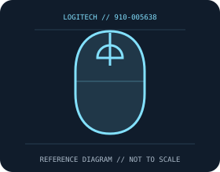

[ MICE AND TRACKBALLS // IDENTIFIED COMPONENT ]
Logitech G703 LIGHTSPEED Wireless Gaming Mouse
Right-handed LIGHTSPEED gaming mouse with HERO optical tracking, six programmable controls, and optional POWERPLAY charging.

MODEL IDENTIFICATION: 910-005638. Confirm printed identifiers, revision, region, and included accessories before repair or compatibility claims.
Model specifications
| Catalog leaf | Mice and trackballs |
|---|---|
| Exact model / identifier | 910-005638 |
| Sensor and switches | HERO optical sensor, 100–25,600 DPI, over 400 IPS and over 40 g; 1,000 Hz report rate over LIGHTSPEED and USB. Main buttons use mechanical switches with tensioning; exact switch maker is not specified for every production run. |
| Wired/wireless interface; polling and DPI | LIGHTSPEED 2.4 GHz USB receiver or wired USB data/charging. Manufacturer specifies 1 ms report rate; use supplied receiver/cable and configure through Logitech G HUB. |
| Dimensions and weight | 124 × 68 × 43 mm; 95 g; optional 10 g weight. Optional 10 g weight is removable. |
| Host and driver compatibility | USB HID works as a standard pointer; full configuration and firmware functions use Logitech G HUB on supported Windows/macOS versions. POWERPLAY charging requires the compatible POWERCORE module and mat. |
| Power and battery | Internal rechargeable battery, USB charging; manufacturer rating is up to 35 hours with default LIGHTSYNC or up to 60 hours with lighting disabled; usage and battery age change runtime. |
| Revision and SKU caveats | Do not conflate this 910-005638 HERO model (up to 25,600 DPI) with earlier G703 910-005091 runs using PMW3366 tracking. Confirm bottom label, sensor generation, firmware, receiver, and included POWERCORE before service. |
Preservation and service
Keep the receiver, cable, battery cover, and included accessories with the identified mouse. Clean optical apertures and trackball contacts without introducing liquid; record host OS, driver/firmware version, connection mode, and battery condition during tests.
Published maximum DPI, polling, click-life, and runtime values are manufacturer figures under specific test conditions, not a guarantee of individual-unit performance.
Manufacturer sources
- Logitech G703 LIGHTSPEED product pageManufacturer product or support documentation; confirm the exact SKU, region, and revision against the device label.
- G703 technical specifications and supportManufacturer product or support documentation; confirm the exact SKU, region, and revision against the device label.
Manufacturer documentation changes over time; retain the applicable manual and revision with the physical equipment record.